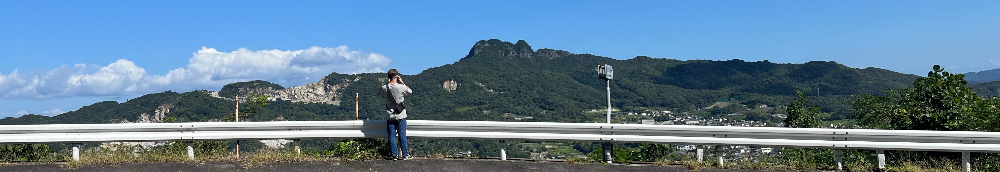

Jason Anderson
Experienced in warehousing, logistics, customer service,
and management. Aspiring web developer and cloud engineer.
Education
- Paradigm High School, South Jordan, UT
- Salt Lake Community College, Taylorsville, UT
- Associates of science, December 2023
- Okayama Institute of Languages, Okayama, Japan
- Japanese Studies April 2023 - September 2023
Employment
- Classic Fun Center, Sandy, UT - Customer Service Representative and Team Lead
- October 2013 - January 2016, January 2018 - November 2019
- Provided Customer Service in Food, Retail, Rental Equipment.
- Trained new employees at the various stations and counters.
- The Church of Jesus Christ of Latter-Day Saints, Salt Lake City, UT - Material Handler
- January 2018 - September 2019
- Filling customer orders by accurately picking ordered product.
- Costco Wholesale, Sandy, UT - Front End Assistant
- Seasonal; November 2019 - January 2020, March 2020 - May 2020
- Assisting with shopping cart loading and unloading, shopping cart gathering, and stocking.
- Woodward Park City, Park City, UT - Action Sports Coach
- November 2019 - March 2022
- Coaching athletes of all ages and skill levels in their respective action sport.
Done in both private and group lessons for Skateboards, Scooters, BMX, Tramploline, Parkour, and Roller Blades.
- Intermountain Lock and Security Supply, Salt Lake City, UT - Warehouse Worker and Delivery Driver
- March 2022 - March 2023, January 2024 - Current
- Picking and packaging products to be delivered to customers.
- Driving deliveries to local locksmith shops and door manufacturers.
Skills
- Logistics
- Warehousing
- Management
- Customer Service
- Team Building
More About Me
I earned the rank of Eagle Scout with the Boy Scouts of America. I Served as a
missionary for the LDS church in 2016 for 2 years in Ohio.
I Love being at the skatepark learning new tricks and spending time with friends.
Thanks to my Father, I have loved video games my whole life, especially survival
and strategy games. I want to live in the Japan countryside someday as a fluent
speaker of Japanese - which all started when a certain friend introduced me to Anime
during covid.
I also have a YouTube channel with videos from Japan! - My YouTube Channel
hint: try clicking the pictures!